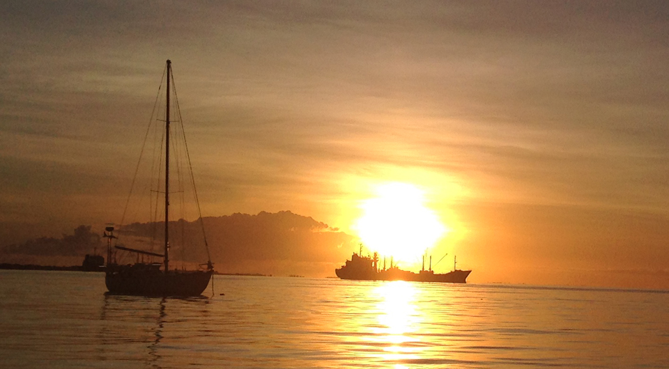
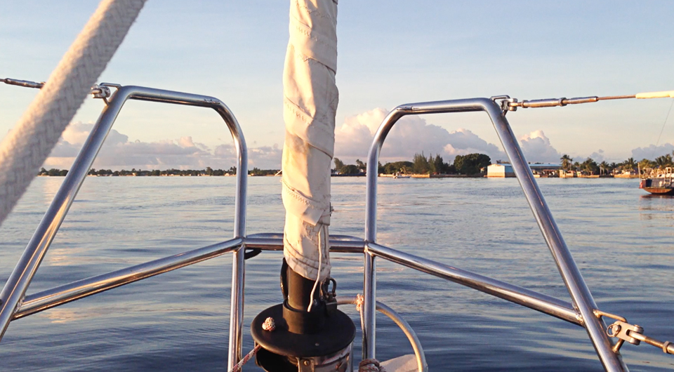

The promise of pancakes
- Checking into majuro
- Customs and immigration
- Internet
- Tide table
- Customs office (again)
- Iggy the sad dinghy
- Conclusion
Checking into majuro
Checking into New Zealand was a breeze (they did confiscate the inch of ginger I had left, but no matter); in French Polynesia the officials were laid back and we could have easily been there for more than 3 months with no one noticing; Tonga had endless paperwork and a scary customs dock - all this to say that clearance procedures from country to country varies a lot. Checking in can be a pleasant experience, but this isn't true for all places and so far the Marshall islands takes the crown - they'd win at the 'most confusing entrance into a country' awards.
As soon as we'd tied to our mooring ball in Majuro's lagoon, the worries of the previous 24 days had vanished only to replaced by the crushing weight of responsibility. Devine, being worry-free, was like...
- "Let's have pancakes! Sleep. Then tomorrow we'll check in!"
But Devine knows how uptight I am, and that this was not what we'd be doing first (even if it is what I wanted too). My thinking is that I'd rather get the paperwork out of the way first, to get all of that worrying out of me so I can then eat pancakes in peace.
- "Shut up and get dressed."
We needed to be presentable for the officials, we had to wear clean clothes with pants that reach over your knees (a lot of countries in the pacific don't want to see your knees - I get it, knees are weird). We dug out some clothes from our bins, and then went back on deck to give Iggy the dinghy 'the kiss of life'.

Our neighbour, a bearded American guy named Charlie, rowed over in his inflatable. We were downwind from him so he didn't bother using his outboard.
- "Hey guys! How you doing?"
- "Salty, but otherwise good."
Charlie had been here for a little while already, and gave us some tips and recommendations for Majuro.
- "Custom and immigration are right next to each other, but it's a bit of a walk. You're better of taking a cab, it costs 1$ per person. Everyone here takes cabs. You just gatta stick your hand out when you see one with your fingers indicating the amount of ppl who need a ride, if they've got room they'll stop otherwise they'll flash their lights and keep going."
Our new neighbour told us about the restaurants here, a good one being a place that Devine understood to be called "Thai table", and I, as "Lanai Table" (don't ask me why). Both of us were sure of what we'd heard, so we didn't bother to ask him to repeat it. Later, we learned it was called "Tide Table". Charlie must have been confused when Devine asked him if he thought the Thai food there was good.
At that point we knew where to find everything. We knew where to get beer, food, internet and where to check in. Charlie did mention that tomorrow was a holiday though, so that if we wanted to get these things we'd need to do it today.
We said thanks to Charlie then, getting ready to step foot on land after 24 days on the ocean. We put our passports and clearance papers from Fiji in our dry bag, attached Turnip the outboard to Iggy's rump and motored over to the dinghy dock ashore next to a bar called "Shoreline". The small dock had fishing boats moored onto it, but at the back of it near the ramp were other dinghies so we left Iggy there so it could socialize.
As soon as we stepped ashore we noticed our legs felt weird, like the ground was pushing up against our feet. This a symptom of land-sickness, of having spent too much time at sea; neither of us felt ill, but it did take some time before we could walk like regular humans again.
We walked past the bar to try and find the main road - easy enough, Majuro has only one. We knew that the customs and immigration offices were to the south of the island, so we stood on the right side of the road to catch a cab in that direction. Devine spotted a cab then, stuck out two fingers but it was full, the driver flashed their lights and continued on. We did this for every cab. The first 5 were completely full!
- "Wow" I said then, "Everyone here take cabs?"
We think that many do yes, and for short distances too. The street was mostly occupied by cabs, there were few cars around. We thought then that maybe this was 'rush hour', but I realized later that it was near noon and that it was possible that a lot of people were going home for lunch (this is true of Mexico and many other South pacific islands). In many countries a lot of businesses close around noon and open again around 1 or 2pm; I didn't make the connection in my brain then, that the government offices may also be closed, I was too busy trying to find a cab to pick us up.
One cab did stop, it had two spots available; we sat inside, saying a friendly "hello!" and realizing then again that we had no idea how to say hello or anything else in Marshallese. (We learned later that "Hello" is "Yokwe", pronounced 'yi-yak-wey'.)
- "To the immigration office!"
I said, stupidly. The cab driver did not respond to this right away, maybe they called the immigration office something else here. I'd heard that people here often make use of acronyms to refer to either banks, stores of government offices. Right now, I wished i'd taken the time to find out what that acronym is, if any. The driver asked something in Marshallese to the other guy in the cab, perhaps looking for some clarification.
The passenger replied in Marshallese, I understood nothing but the word 'finance'.
- "AH - yes! Finance! That's it!" I said.
Charlie had said that the customs office had the word 'finance' on it.
While in the cab we took in our surroundings, it was very grey and rainy that day but people were cooking food on grills anyway, the rain helped to subdue the cloud of black smoke rising from the metallic BBQs. A restaurant had stalks of bananas laid out on tables on the storefront, as well as some pinecone-looking type of fruit that I've never seen before. That's something I love about arriving in new places, seeing something I'm unfamiliar with and learning to cook with it. The restaurant also had breadfruit, but they were smaller than the ones I was used to, and oblong-shaped. We took note of the stores, going past a few supermarkets like Island pride., Payless and EZ mart. We had no more veggies so we'd have to stop by later to get something.
At this point we thought we could get back to the boat before 13h so we could make our delicious pancake meal with coffee. I was salivating at the thought of it, my tired brain required caffeine and fidgeted uncomfortably in my skull.
- "Hey... hey didn't you forget something? Where's the brown brew? I need my fix!"
When in a cab in Majuro passengers don't call out where they want to go when getting in, in fact we were startled by the absence of conversation; people usually just say when they want to get off, like on a bus. When you board a cab, you have to make sure its going the right way because a car going south will not go north for you, it goes in that direction and that's it. This system only works in places like this, where land space is limited and when there's only one road. The cab stops for people as long as there is room, and will keep going until the end of the island is reached, then turn around and go the other way.
The cab ride was short, the driver dropped us off in front of the office with the word 'finance' on it. We paid him two dollars -one for each of us- and stepped out.
Customs and immigration
We decided to go see immigration first in the next building, situated on the 3rd floor (thanks Charlie!). We took the elevator, the door opening onto a space that was under some serious construction. We asked the first person we saw, making sure that this was where immigration was and they nodded, pointing to a door at the end of a short corridor. The door was closed, and had a sign on it stating that because of construction the office operated on a limited schedule and closed at noon.
Uh oh.
The immigration office was closed for the day, tomorrow was a holiday, and then it was the weekend. It wouldn't open until Monday. We stared at the door for a while, saying nothing, as if trying to process it all inwardly. Then a guy noticed we were staring and asked if we were looking to check in.
- "Yes please!"
This was the immigration officer, the office had just closed but he re-opened it and offered to check us in. We filled in the papers he pushed in front of us and he took our clearance papers from Fiji... then our passports, but he looked at them and then gave them back.
- "You have to come back some other time."
He said to us. We looked at him, confused.
- "Why can't we have the passports stamped now?"
- "No more time."
I understood that we were impeding on his lunch hour, but if this was a problem he wouldn't have re-opened the office for us, we didn't force his hand. This didn't make sense. Either way, there wasn't much we could do about it. Then, he spoke again.
- "Tomorrow at 10 o’clock, meet me at Shoreline. I will stamp your passports."
We said 'ok', not sure what else to do. On the way out though, I remembered someone warning us that Marshallese officials will sometimes try to trick you into checking in after hours so they can charge you extra 'processing' fees (150$). Tomorrow was a holiday, we hoped that him feigning to not have enough time wasn't really just an attempt at making some extra cash.
Ugh. We'd deal with this tomorrow, at least immigration was aware we were in the country. We strolled over to customs, but they were closed for lunch and were supposed to re-open at 14h. It was now 12h15, we had some waiting to do and so Devine suggested we go and get some data for our phones and then stop to have lunch at Tide Table. I was hungry, but hungry for something specific; I wanted to be in a dry place with a cup of coffee and some pancakes. I knew I couldn't have that now, and this put me in a terrible mood; because of my moodiness we couldn't agree on anything. I wanted things I couldn't have and acted like a small child in tears over my parents not wanting to pull the moon down from the sky for me, like THEY were the unreasonable ones - note that I regress when I'm tired and thoroughly decaffeinated. I'm amazed that Devine always manages to remain non-affected by my despair and negativity.
- "Hey, it's okay."
Devine would say, smiling.
We were hiding from the rain in front of the 'finance' office, talking and trying to make a decision when we spotted the immigration officer getting into his car. First, he backed onto a traffic cone, then it got wedged between the wheel and body of the car, he stuck his head out, but didn't look like he wanted to deal with it so he drove on. We watched him disappear down the road, a bright orange cone trapped under his car, dragging on the pavement and making an awful racket.
We laughed. This helped coax me back into a good mood. If we wanted to get internet, we'd have to cab there, then, cab back to Tide Table... then, cab over here at the customs office again only to cab back yet again to go back to the boat. I don't like riding in cars, nor paying for transport, but since the street has little to no sidewalks and that the road was bordered by giant puddles of water I stuck out two fingers at the passing cabs.
- "Getting internet probably won't take long, then we can eat! Food? Remember food and how it makes you happy?"
My stomach growled at these words, as if the word 'food' could give me sustenance.
- "Fine."
Internet
We took a cab over to NTA, an internet service provider here in Majuro. We went to sit in the waiting room, facing a giant green wall with a large "4G" cutout, it looked like a pop-up store, with the two employees sitting in front of a folding table, made pretty with a green flowered cloth. The youngest of the two employees waved us over.
- "How can I help you?"
- "We need internet on our phones, says on the wall you've got unlimited. We want that."
- "Let me see your phone."
He asked. After looking it over, he shook his head.
- "Your phone is too told - LTE requires Iphone 6 and up."
We had an Iphone 5S. We thought it funny to come here, in a lonely atoll in the Marshalls only to be told that our phone was too old; looking around, we could see everyone had better phones than we did - and we're supposed to be game developers...!
- "Is there another internet provider in Majuro?" Devine asked.
The two employees laughed at this, as if it had been a joke question. We had our answer. When the laughing ceased they suggested we get a pocket wifi, it costs 70$ for the device and then another 70$ for 50G of data (speed slows when limit is reached). We had no choice.
- "Okay, we'll go for that then."
- "Great! But we've run out! We're getting some more this afternoon. Come back after 2!"
Just our luck. We really wanted to get internet today, because we feared the office would be closed tomorrow. We would have to find something else to do (again) and come back at that time to get the device.
Tide table
By that time both of us were starving and figured that after this evergrowing list of failures, getting some food was a good idea. We hailed a cab and stopped at Tide Table, a restaurant annexed to a hotel called the "RRE". Walking around town that day, we noticed many building had that same acronym; it stands for "Robert Reimers Enterprises" - they own a lot of buildings and stores here in Majuro. Tide Table is a bright blue building, at first glance it looks like some kind of aquarium. We climbed up to the second floor to the restaurant and took a seat inside; it was air-conditioned and because our clothes were wet our skin turned to ice.
Looking at the menu, we saw they had something on the menu called 'vegan sushi' and a 'vegan burrito'.
- "Whoa-" we thought, "Here? Vegan food? In the Marshalls?"
We liked this place already. We picked the lunch special, consisting of a rice and vegetable curry. I wondered what sort of vegetables they'd be putting into the curry knowing that Majuro didn't have a great variety. Before arriving, I'd read that most of the vegetables here are shipped frozen from either Hawaii or Guam. I've had the experience of buying previously frozen produce before and it's sad; the carrots rot within a day and the tomatoes taste like water. When buying vegetables, you've got to go when the ship's just arrived, or be willing to not buy certain items. This means i'll often choose potatoes, pumpkins or cabbage over peppers and fresh greens.
We ordered the curry anyway, it consisted mostly of black beans but had some tiny bits of pepper and cabbage; here in Majuro they use what they can get, and that the recipe varies from day to day. We really liked the food, even if the vegetable to bean ratio was off. With the meal - most important of all - we also ordered some bottom-less coffee, in an attempt at re-animating our freezing corpses. We drank many cups, colour returning to our flesh with every gulp - we are the revenants.
Customs office (again)
By the time we finished eating it was 2h10pm, I downed my last cup of infinite coffee and we cabbed back over to customs to get our paperwork done. When we arrived the office was still closed, with a line of fidgety customers waiting at the door - we too added to this line, equally annoyed and fidgety - mostly due to our caffeine intake. After 20 minutes, the doors opened and we hurried inside, presenting our papers to the first person we saw. We realized then that he spoke little english...
- "We want to check-in. We just arrived by boat."
- "When you arrive?" he asked us.
- "Today, we just arrived. We're on a boat."
- "Boat? Okay. Show me your papers."
- "Papers?"
We didn't know what papers he meant, but looking through our pile of paperwork he saw another set of clearance papers from Fiji which he took from us. He then asked us if we had papers from immigration for him - or at least, that's what we understood he'd said.
- "No? They gave us nothing."
- "When you arrive?" he asked again, I think he wanted to know the time rather than the date so we tried to give him everything he needed by saying it all again. We wanted to make sure he got all of the information down right.
- "Today. At 10am."
- "On boat..."
- "Yes that's right. On a boat."
He took a note on it, along with our boat name, time of arrival etc. I wondered then if the reason we didn't get a paper from Immigration was because we hadn't truly 'completed' the entrance process, or if it was because he'd forgotten to give us a paper bound for the customs official; or maybe, again, we were misunderstanding something. The official then said "Ok."
- "Ok? So it's done? Everything is ok?"
- "Everything is ok." he repeated.
- "We don't get a paper? A receipt or anything?"
- "Everything is ok."
I groaned at this. I hate leaving governement offices without some sort of paper confirming the completion of an important exchange. Now we had no more clearance papers from Fiji, they'd taken those; no stamps in our passports, and no paper what-so-ever confirming that we'd checked in. I learned later, that this is just how it is in Majuro, unlike Fiji, you don't have endless stacks of papers to fill or documents to hold onto afterwards. At the time though, I didn't know this, used to over-the-top New Zealand bureaucracy. We exited the building then, with me freaking out...
- "We don't have anything confirming anything!"
Devine, being the stoic one, said calmly.
- "They know we're here. We did sign that paper at Immigration - and he did take our clearance forms so we are in 'the system'. Tomorrow he'll stamp our passports and we'll be good!"
- "He'll charge us extra."
- "Maybe he won't, you don't know that. Can't always think that what others have experienced are true again today, things change."
- "You're right, you're right."
Before we got to Fiji, people had told us really terrible things about it, about thievery and people boarding your boat at night. We've heard stories like that before, and never experienced it ourselves. This doesn't mean that they didn't happen, or that it can't happen, but it also shouldn't deter people from traveling there. We had an amazing time in Fiji, we befriended many locals too; if we'd listened to others we would have missed out on a beautiful country. Sometimes, you just have to take other people's re-tellings of a place with a grain of salt, don't form an opinion before having gone there yourself and even then, be open and don't judge.
I hoped Devine was right though about the extra processing fees, I didn't want to pay them. Now, we headed back over to NTA to get our precious internet. They had our device, as promised, and we paid the required amount - finally, something simple. We had internet again! I was amazed at how fast it was, and was told it would work from the anchorage too.
We made it back to Shoreline, to the dinghy dock where Iggy was. Iggy looked a little deflated, but I attributed that to the cold weather. I pumped air back into the tubes and we motored back to Pino. The weather was really rough that night, and the next morning was no better. It was raining non-stop. Iggy was becoming a swimming pool and kept losing air, I had to go bail water out, and pump air into it every 3-4 hours to keep it afloat.
Iggy the sad dinghy
Iggy the dinghy has been giving us a lot of trouble as of late, the problems started in Fiji after we left Savusavu; someone in Makogai gave us a tow, and caused the division between the two 2 air chambers inside to tear. This means that if there's a hole on one side, the other is affected; the two chambers are there to help keep you afloat and now we didn't have that anymore. That wasn't the only problem. The seams started to come apart, and that, is HARD to fix. While in Lami (Fiji), our kind NZ neighbours introduced us to a local who lent us a hard dinghy that we could use while getting Iggy patched up (a dinghy we nicknamed Tippy - you can guess why). We did manage to fix Iggy, and this fix lasted us till the end of our stay in Fiji; but after 3 weeks of being folded on deck, Iggy developed another bad leak.
That morning, around 10 o'clock, Devine took our passports to shore with Iggy in the rain to meet the Immigration officer so we could get our passport stamped; then, maybe 30-40 minutes later, Devine returned, completely soaked with a deflated Iggy.
- "Outboard stopped halfway, then Iggy began to lose air! Was adrift, and sinking, but came near a boat and shouted for help. The guy onboard gave me a tow to the dock, when we got there he said 'Your dinghy doesn't look sea-worthy'. No shit."
To make matters worse, Devine had gone to shore to meet the Immigration official for nothing because he was a no-show. It was probably for the best, we'd go back to the office on monday ourselves instead.
This trip to shore revealed another serious air leak in Iggy. Back aboard, we took the outboard off in fear that it would sink with Iggy if it lost all its air. I climbed into our sad inflatable to assess the damage, one of the seams on the front left side was completely open, there was nothing I could do from the water and so we heaved Iggy back on deck. I bought some PVC glue back in Suva (Fiji) that we could use to mend it, but by now both of us were worried about riding this dinghy to shore. Every time we fixed it, a new problem would arise, another seam coming apart elsewhere...
We weren't sure what to do, we were boat-bound with no means of getting to shore. When we left Fiji, we signed up to an email exchange group for those traveling to the Marshalls, and Karin from SY Seal sent us a message to welcome us. I sent her a message explaining our situation, and she promptly alerted her partner Cary. He came to see us the next day, and when Devine told him of our dinghy problems he offered to rent us a hard dinghy.

This is the dinghy what we have been using since, a great fibreglass tender and better alternative to Tippy. We've been trying to repair Iggy in the meantime, doing our best to heal all its wounds but we know it won't last. At least we have some means of going to shore now, and this amazing hard dinghy just confirms our desire to have one for Pino in the future. Iggy just has to last us till Guam, after that, we won't need it in Japan (since no one anchors out).
Conclusion
This concludes our entrance story into Majuro! We've since had our passport stamped. It took 2 days of going back and forth from boat to office. On the first visit, one of the officials was gone to the airport with 'the stamp' so the one in office asked us to come back some other time - yep, they've only got the one stamp. This is what life is like on these small islands, the officials that clear in foreigners in airports is often the same one that sits in office on normal times, either that, or only one of them has the 'authority' to check you in. Checking into the Marshalls in Majuro, we realized, is like playing a game of trying to catch them while they're in office, and making sure to refuse any offer to complete the process outside of regular hours.

Clearing it wasn't great, but overall daily life here is good. The veggies are often rotten or scarce, but bananas are plentiful, and the restaurants are kind of great. There are lot of good Japanese and American products available, like Asahi beer and Lotus root snacks. The locals are amazing, understanding and kind; we've had a few laughs with the ladies that work at the ACE hardware after we caught them playing with some wind-up mouse toys. This ACE hardware is well furnished with electrical items that have our voltage (Pino is 110V); we bought a second fan for the boat there, something I wish we'd had for our last sweaty passage - lacking enough fans, we became 'puddle-people'. The internet here is great, we have a fast connection and can work from our floating office.
I forgot to say, but after getting back to Pino on the first day we made some savoury pancakes for dinner and it was the BEST.